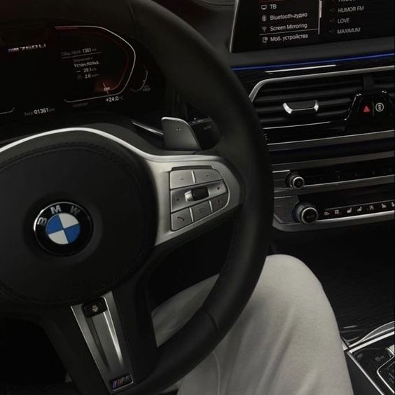

Eletrônica Automotiva

O tecnólogo em Eletrônica Automotiva:
- Participa de equipes de desenvolvimento de novos produtos, novas tecnologias e subsistemas na área automotiva;
- Supervisiona, coordena e orienta equipes na área automotiva; realiza a padronização, mensuração e controle de qualidade nas áreas automotivas de veículos especiais, carga e passeio;
- Especifica instrumentos e equipamentos para teste de veículos; oferece assistência, assessoria e consultoria referentes a instrumentos e equipamentos usados em testes de veículos de especiais, carga e passeio;
- Elabora orçamentos referentes à instrumentos e equipamentos usados na indústria automotiva;
- Gerencia e realiza vistorias, perícias, avaliações, arbitramento, laudo e parecer técnico referentemente à áreas afetadas à veículos especiais, carga e de passeio;
- Supervisiona, coordena e orienta tecnicamente equipes de uma linha de inspeção veicular;
- É capaz de selecionar e desenvolver novas tecnologias levando-se em conta características técnicas, humanas, econômicas e gerenciais de sistemas automobilístico;
- Opera e faz manutenção de equipamentos em inspeção veicular;
- Estuda a viabilização técnico-econômica de uma oficina autorizada ou independente;
- Supervisiona, coordena e orienta tecnicamente equipes de uma oficina autorizada ou independente.